<!-- .slide: data-state="front hide-controls" --> <div id="title">Software Vulnerabilities</div> <div id="subtitle">Data Privacy and Security</div> <div id="date">Data Science and Management (DASMA)</div> --- <!-- .slide: data-state="break-blue hide-controls" --> # (Software) Vulnerability --- ## Definitions <div class="content-center"> **Vulnerability**: a weakness which allows an attacker to reduce a system's information assurance. <br/> <br/> <div class="columns-container columns-center"> <div class="col"> <div class="fragment" data-fragment-index="1"> It is the intersection of three elements: 1. A system susceptibility or flaw 2. Attacker access to the flaw 3. Attacker capability to exploit the flaw <br/> <br/> </div> </div> <div class="col"> <div class="fragment" data-fragment-index="1"> <br/> <br/> </div> </div> </div> <div class="fragment" data-fragment-index="2"> <div class="cell-center"> Main causes: **bugs**, **design defects**, **misconfigurations**, **aging** </div> </div> </div> --- ## Fostering Factors <div class="content-center"> Factors that increase the likelihood of vulnerabilities: <br/> <br/> <div class="fragment" data-fragment-index="0"> <div class="columns-container columns-center"> <div class="col"> - **System complexity**: more code, more features, more attack surface <br/> - **Connectivity**: networked systems are exposed to remote attackers <br/> - **Incompetence**: lack of security training and awareness among developers and users </div> <div class="col"> <p>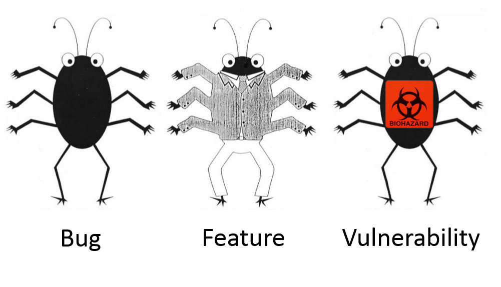</p> </div> </div> </div> </div> --- ## Motivations <div class="content-center"> Vulnerability in software is one of the major reasons for insecurity: <br/> <br/> <div class="columns-container columns-center"> <div class="col"> - On average, there are **20 flaws per thousand lines of code** <br/> - There is a steady increase in vulnerability exploitations <br/> - Fully secure software is **unlikely** <br/> - **95% of breaches** could be prevented by keeping systems up-to-date with patches </div> <div class="col"> <div class="cell-center"> <p>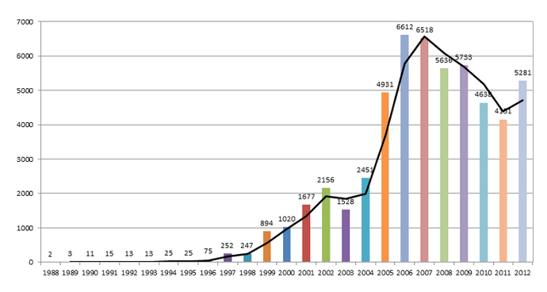</p> <small>Source: <br>[Report by Sourcefire on 25 Years of Vulnerabilities (1988-2012)](https://owasp.org/www-chapter-belgium/assets/2013/2013-03-05/OWASP_Belgium_Yves_Younan_2013.pdf)</small> </div> </div> </div> </div> --- <!-- .slide: data-state="break-blue hide-controls" --> # Vulnerability Life Cycle --- ## Vulnerability Life Cycle <div class="content-center"> <p>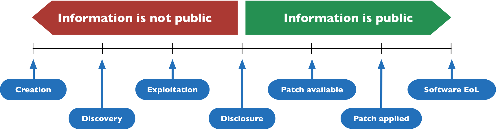</p> <br/> <div class="fragment" data-fragment-index="0"> 1. **Creation**: vulnerability is introduced (e.g., during development) <br/> </div> <div class="fragment" data-fragment-index="1"> 2. **Discovery**: found by malicious users, or benign users (end users, security firms, researchers, ...) <br/> </div> <div class="fragment" data-fragment-index="2"> 3. **Exploitation**: attacker uses the vulnerability to compromise the system <br/> </div> <div class="fragment" data-fragment-index="3"> 4. **Disclosure**: keep it secret, publicly disclose, or sell it <br/> </div> <div class="fragment" data-fragment-index="4"> 5. **Patch**: vendor releases a fix for the vulnerability </div> </div> --- ## Vulnerability Life Cycle: Who Pays The Cost? <div class="content-center"> <p>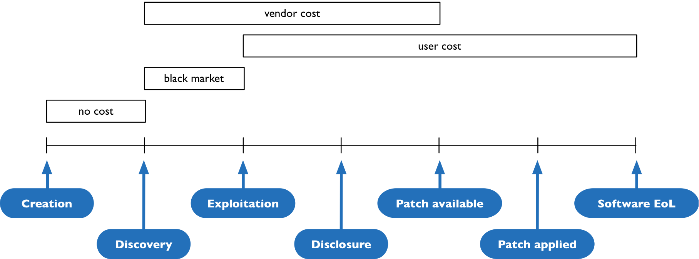</p> </div> --- <!-- .slide: data-state="break-blue hide-controls" --> # Vulnerability Responsible Disclosure --- ## Responsible Disclosure <div class="content-center"> What process should a responsible user follow to disclose a vulnerability? <br/> <br/> <div class="fragment" data-fragment-index="0"> There is **no consensus**: different vendors provide different guidelines for disclosure. <br/> </div> <div class="fragment" data-fragment-index="1"> - **CERT** (Computer Emergency Response Team) may allow a **45-day** grace period - **OIS** (Organization for Internet Safety) may allow a **30-day** grace period - Security firms follow their own internal guidelines <br/> </div> </div> --- ## Disclosure Policy Effects <div class="content-center"> <div class="fragment" data-fragment-index="0"> **Full Vendor Disclosure**: - Promotes secrecy - Gives full control of the process to the vendor <br/> </div> <div class="fragment" data-fragment-index="1"> **Immediate Public Disclosure**: - Promotes transparency - Gives the vendor a strong incentive to fix the problem - Allows vulnerable users to take intermediate measures - Immediate exposure to risks <br/> </div> <div class="fragment" data-fragment-index="2"> **Hybrid Disclosure**: - Promotes both secrecy and transparency (grace period before public disclosure) </div> </div> --- ## Example: ProxyLogon (2021) <div class="content-center"> ProxyLogon is a 2021 vulnerability found on **Microsoft Exchange Servers**, discovered by Orange Tsai (DEVCORE Research Team). <br/> <br/> <div class="columns-container columns-center"> <div class="col"> **Prerequisites for the attack**: an open HTTPS port (443), i.e., the server is running! <br/> <br/> **Outcome**: an unauthenticated attacker can execute arbitrary commands on the system (spawn a remote shell, leak all files, ...) <br/> </div> <div class="col"> </div> </div> </div> --- ## ProxyLogon: Vulnerability Disclosure Timeline <div class="content-center"> | Date | Event | |------|-------| | **Dec 10, 2020** | Orange Tsai discovers the vulnerability | | **Jan 5, 2021** | DEVCORE reports the vulnerability to Microsoft | | **Jan 6, 2021** | Volexity detects exploitation in the wild | | **Feb 18, 2021** | Microsoft notified about active exploitation | | **Mar 2, 2021** | Microsoft releases patches | | **Mar 2, 2021** | At least 30,000 organizations compromised in the US alone | <br/> <div class="fragment" data-fragment-index="0"> A well-known example of how the time window between discovery and patch can be exploited at scale. </div> </div> --- <!-- .slide: data-state="break-blue hide-controls" --> # Bug Bounty Programs --- ## Bug Bounty Programs <div class="content-center"> A **bug bounty program** is an initiative offered by organizations that rewards security researchers for responsibly discovering and reporting vulnerabilities. <br/> <br/> <div class="fragment" data-fragment-index="0"> Key characteristics: - Defined **scope** (which products/services are in scope) - **Rules of engagement** (what is allowed and what is not) - **Reward tiers** based on severity (from a few hundred to hundreds of thousands of dollars) - Legal **safe harbor** for researchers who follow the rules <br/> </div> </div> --- ## Google Vulnerability Reward Program <div class="content-center"> One of the largest bug bounty programs in the world, covering all Google user-facing products (including web applications). <br/> <div class="fragment" data-fragment-index="0"> - **$3.4 million** of total rewards in 2018 - **$12 million** of total rewards in 2023 - Over **$50 million** paid since inception <br/> </div> <div class="fragment" data-fragment-index="1"> Other major programs: - **Microsoft**: up to $250,000 for critical vulnerabilities - **Apple**: up to $2,000,000 for zero-click kernel code execution - **Meta**: over $16 million paid since 2011 <br/> </div> <div class="fragment" data-fragment-index="2"> Major platforms: **HackerOne**, **Bugcrowd**, **Intigriti**, **Synack** </div> </div> --- ## Google Vulnerability Reward Program [2018] <div class="content-center"> <p>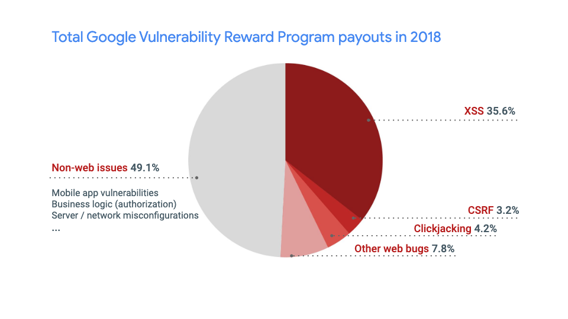</p> </div> --- ## HackerOne Program <div class="content-center"> <p>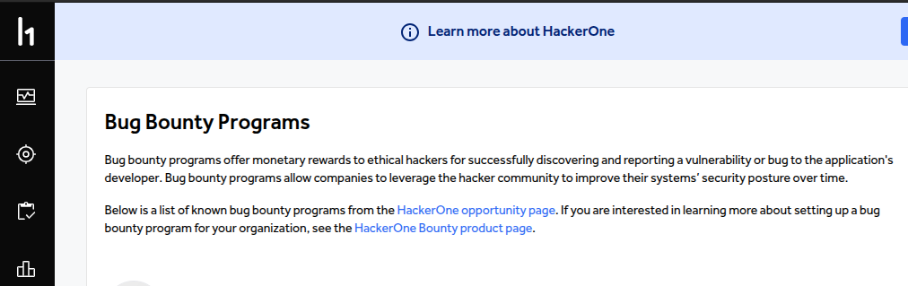</p> </div> <div class="footnotes"> <sup>*</sup> https://www.hackerone.com/ </div> --- ## HackerOne Top 10 [2018] <div class="content-center"> <p>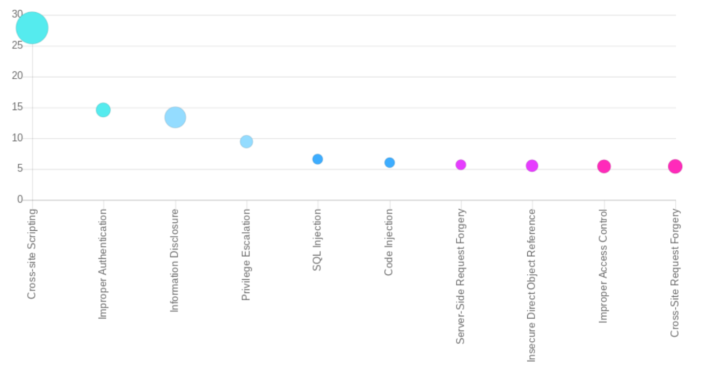</p> Bubble size represents volume of reports, Y-axis represents that Weakness Types percent of the total bounties paid to all Top 10 combined. </div> --- ## HackerOne Top 10 [2024] <div class="content-center"> <p>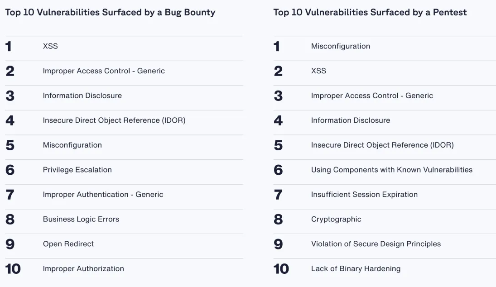</p> </div> <div class="footnotes"> <sup>*</sup> **Source**: https://www.arturjanc.com/usenix2019/ </div> --- <!-- .slide: data-state="break-blue hide-controls" --> # The market value of a vulnerability --- ## The Gray Market: Zero-Day Brokers <div class="content-center"> Not all vulnerabilities go through responsible disclosure or bug bounties. <br/> <br/> <div class="fragment" data-fragment-index="0"> **Zero-day brokers** buy and sell 0-day exploits: - **Zerodium**: publicly advertises prices for 0-day exploits - Up to **$2,500,000** for a full iOS chain (zero-click) - Up to **$2,000,000** for Android full chain - Up to **$1,000,000** for WhatsApp/iMessage RCE - **NSO Group**: developed Pegasus spyware using 0-day exploits <br/> </div> <div class="fragment" data-fragment-index="1"> Buyers are typically: - Government agencies and intelligence services - Law enforcement - Defense contractors This market raises **significant ethical and legal concerns**. </div> </div> --- <div class="content-center"> <p>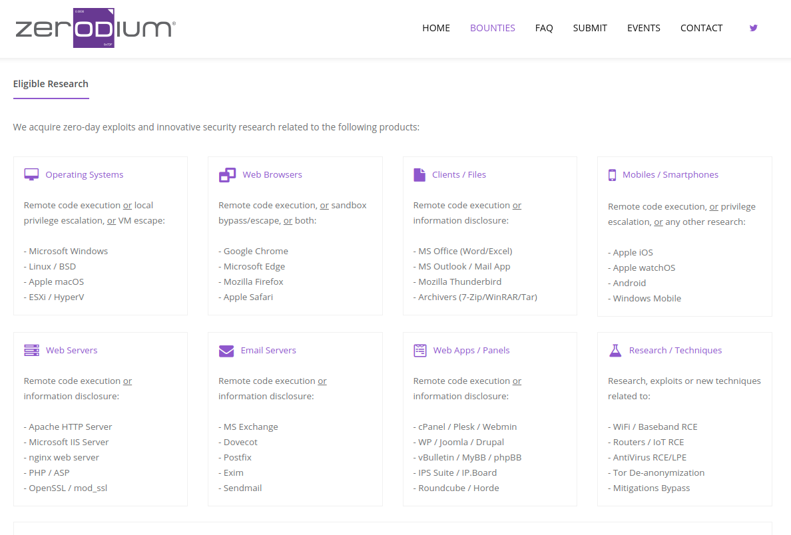</p> </div> --- <div class="content-center"> <p>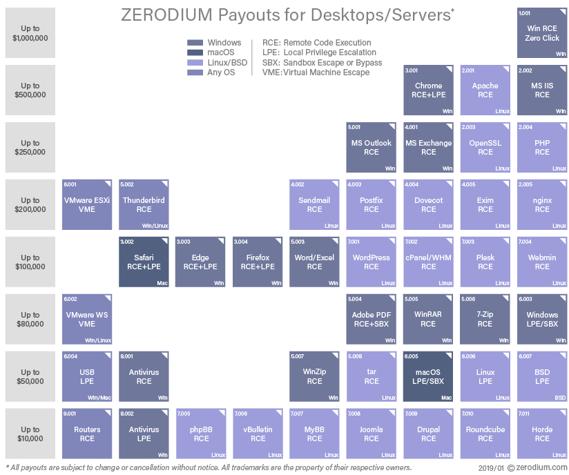</p> </div> --- <div class="content-center"> <p>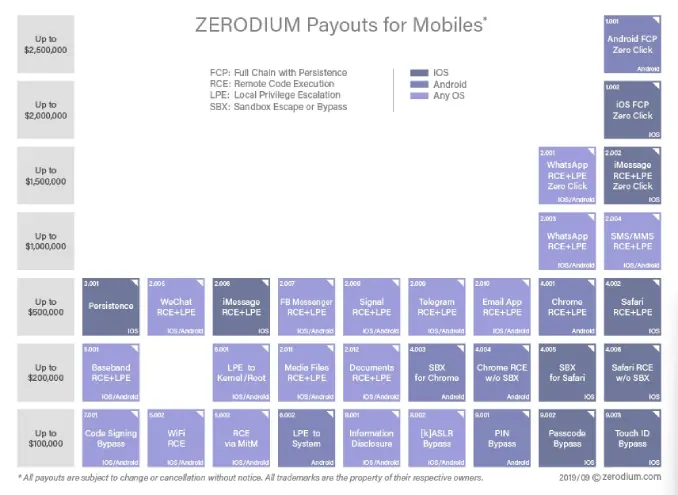</p> </div> --- <!-- .slide: data-state="break-blue hide-controls" --> # Weakness Classification --- ## <ins>C</ins>ommon <ins>W</ins>eakness <ins>E</ins>numeration (CWE) <div class="content-center"> A category system for weaknesses and vulnerabilities, maintained by the **MITRE Corporation**. A **weakness** is a condition in a software, firmware, hardware, or service component that could contribute to vulnerabilities. <br/> <p>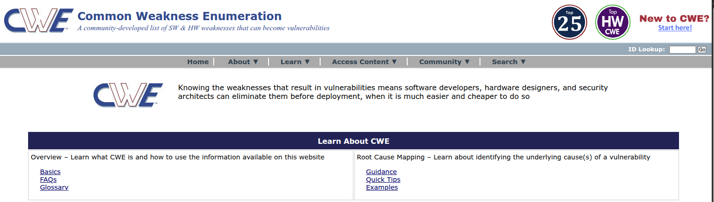</p> <br/> <br/> <div class="cell-center"> The CWE list is a comprehensive catalog of **900+ entries**, each describing a type of weakness. </div> </div> --- ## 2024 CWE Top 25 Most Dangerous Software Weaknesses <div class="content-center"> <p>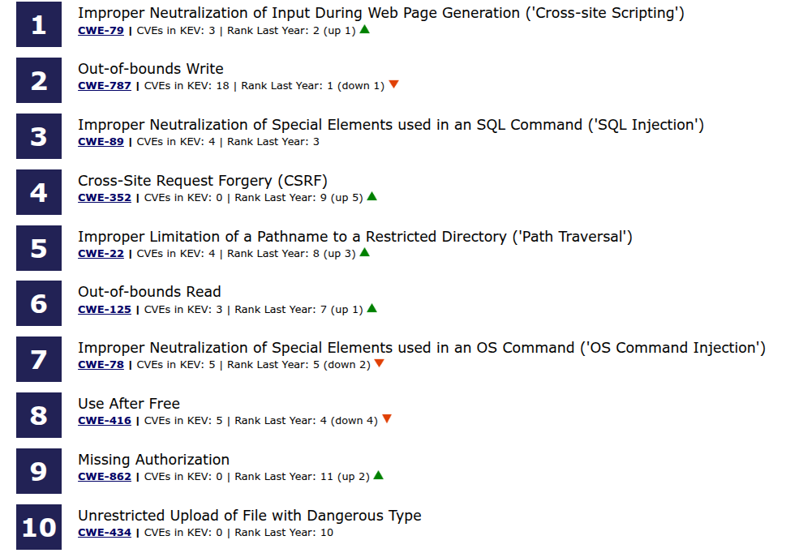</p> </div> <div class="footnotes"> <sup>*</sup> **Source**: [cwe.mitre.org/top25](https://cwe.mitre.org/top25/archive/2024/2024_cwe_top25.html) </div> --- ## Example <div class="content-center"> <p>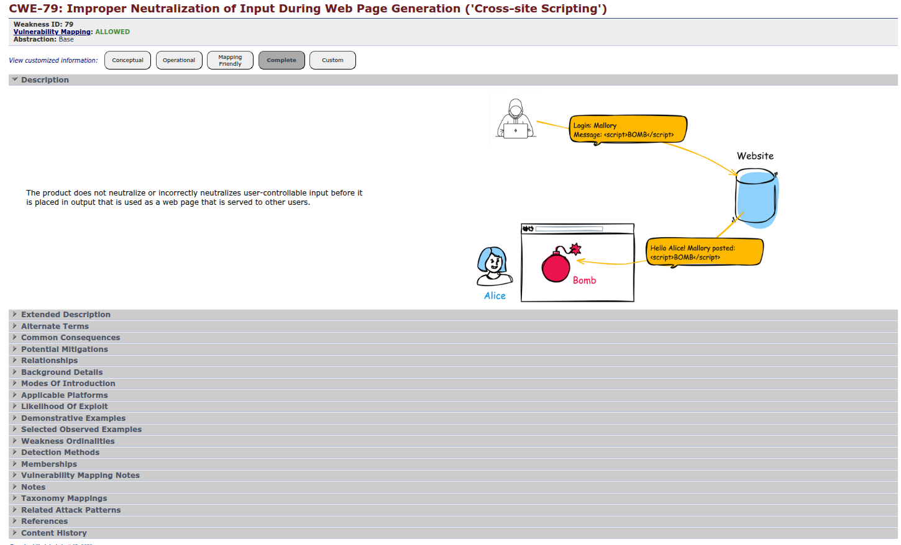</p> </div> --- ## <ins>O</ins>pen <ins>W</ins>orldwide <ins>A</ins>pplication <ins>S</ins>ecurity <ins>P</ins>roject (OWASP) <div class="content-center"> OWASP is an online community that produces freely available articles, methodologies, documentation, tools, and technologies in the fields of IoT, system software, and web application security. <br/> <br/> <div class="fragment" data-fragment-index="0"> OWASP is best known for their **Top 10** vulnerability list (originally web-centric). </div> <div class="fragment" data-fragment-index="1"> The list is updated approximately every **3-4 years** based on data from security organizations worldwide. </div> </div> --- ## OWASP Top 10 [2021 Edition] <div class="content-center"> | Rank | Category | |:----:|----------| | A01 | **Broken Access Control** | | A02 | **Cryptographic Failures** | | A03 | **Injection** (SQL, OS, LDAP, XSS) | | A04 | **Insecure Design** | | A05 | **Security Misconfiguration** | | A06 | **Vulnerable and Outdated Components** | | A07 | **Identification and Authentication Failures** | | A08 | **Software and Data Integrity Failures** | | A09 | **Security Logging and Monitoring Failures** | | A10 | **Server-Side Request Forgery (SSRF)** | </div> <div class="footnotes"> <sup>*</sup> **Source**: [owasp.org/www-project-top-ten](https://owasp.org/www-project-top-ten/) </div> --- ## A01: Broken Access Control <div class="content-center"> Access control enforces policies to prevent users from acting outside their intended permissions. <br/> <br/> <div class="fragment" data-fragment-index="0"> Common vulnerabilities: - Bypassing access control checks by modifying the URL or API request - Viewing or editing someone else's account (IDOR) - Privilege escalation (acting as admin without being one) - Metadata manipulation (e.g., tampering with JWT tokens) <br/> </div> <div class="fragment" data-fragment-index="1"> **Example**: Changing the URL from `/user/123/profile` to `/user/456/profile` to access another user's data. </div> </div> --- ## A02: Cryptographic Failures <div class="content-center"> Failures related to cryptography that often lead to sensitive data exposure. <br/> <br/> <div class="fragment" data-fragment-index="0"> Common issues: - Transmitting data in clear text (HTTP instead of HTTPS) - Using old or weak cryptographic algorithms (e.g., MD5, SHA1, DES) - Not enforcing encryption for sensitive data - Storing passwords in plain text or with weak hashing <br/> </div> <div class="fragment" data-fragment-index="1"> **Example**: A website stores credit card numbers without encryption; a database breach exposes all records. </div> </div> --- ## A03: Injection <div class="content-center"> An application is vulnerable to injection when user-supplied data is not validated, filtered, or sanitized. <br/> <br/> <div class="fragment" data-fragment-index="0"> Types of injection: - **SQL Injection**: inject SQL queries via user input - **OS Command Injection**: inject operating system commands - **Cross-Site Scripting (XSS)**: inject JavaScript into web pages - **LDAP Injection**: manipulate LDAP queries <br/> </div> <div class="fragment" data-fragment-index="1"> **Example**: A login form with SQL Injection: ``` Username: ' OR '1'='1 Password: anything ``` The resulting SQL query: `SELECT * FROM users WHERE user='' OR '1'='1' AND pass='anything'` </div> </div> --- ## A04–A07: Overview <div class="content-center"> **A04 – Insecure Design**: Flaws in the design itself (not implementation bugs). Missing or ineffective security controls at the architecture level. - Example: No rate limiting on password reset, allowing brute force. <br/> <div class="fragment" data-fragment-index="0"> **A05 – Security Misconfiguration**: Default configurations, open cloud storage, verbose error messages, unnecessary features enabled. - Example: Default admin credentials left unchanged. <br/> </div> <div class="fragment" data-fragment-index="1"> **A06 – Vulnerable and Outdated Components**: Using libraries, frameworks, or components with known vulnerabilities. - Example: Running Apache Struts with the CVE-2017-5638 vulnerability (Equifax breach). <br/> </div> <div class="fragment" data-fragment-index="2"> **A07 – Identification and Authentication Failures**: Weak password policies, missing MFA, session fixation. - Example: Allowing automated credential stuffing attacks. </div> </div> --- ## A08–A10: Overview <div class="content-center"> **A08 – Software and Data Integrity Failures**: Code and infrastructure that does not protect against integrity violations. - Example: Auto-update mechanisms without verifying the signature of updates. <br/> <div class="fragment" data-fragment-index="0"> **A09 – Security Logging and Monitoring Failures**: Insufficient logging, detection, monitoring, and active response. - Example: Breaches that go undetected for months because no alerts were configured. <br/> </div> <div class="fragment" data-fragment-index="1"> **A10 – Server-Side Request Forgery (SSRF)**: The application fetches a remote resource without validating the user-supplied URL. - Example: An attacker tricks the server into accessing internal services: `http://localhost:8080/admin`. </div> </div> --- ## OWASP Top 10: Evolution (2017 → 2021) <div class="content-center"> <p>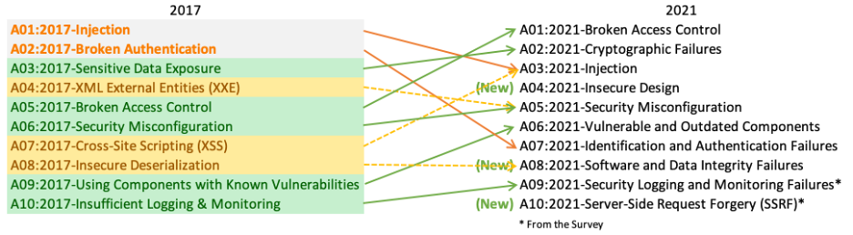</p> Notable changes: - **Broken Access Control** rose from #5 to #1 - **Injection** dropped from #1 to #3 (now includes XSS) - Two **new categories**: Insecure Design and SSRF </div> --- ## CWE vs OWASP Top 10 <div class="content-center"> | Aspect | CWE | OWASP Top 10 | |--------|-----|---------------| | **Purpose** | Catalogs software vulnerabilities (weaknesses) | Highlights top (web) application security risks | | **Scope** | Broad — all software types and systems | Focused — specifically on (web) applications | | **Managed By** | MITRE Corporation | Open Worldwide Application Security Project | | **Format** | Comprehensive list (~900+ entries) | Curated list of top 10 critical risks | | **Update Frequency** | Irregular, 2-3 times per year | Approximately every 3-4 years | | **Use Case** | Detailed reference for developers, tools, training | Awareness and prioritization for (web) app security | | **Example Entry** | CWE-79: Improper Neutralization of Input (XSS) | A03:2021 – Injection | </div> --- <!-- .slide: data-state="break-blue hide-controls" --> # Vulnerability (Public) Tracking --- ## Common Vulnerabilities and Exposures (CVE) <div class="content-center"> The CVE system provides a reference method for **publicly known** information-security vulnerabilities and exposures. <p>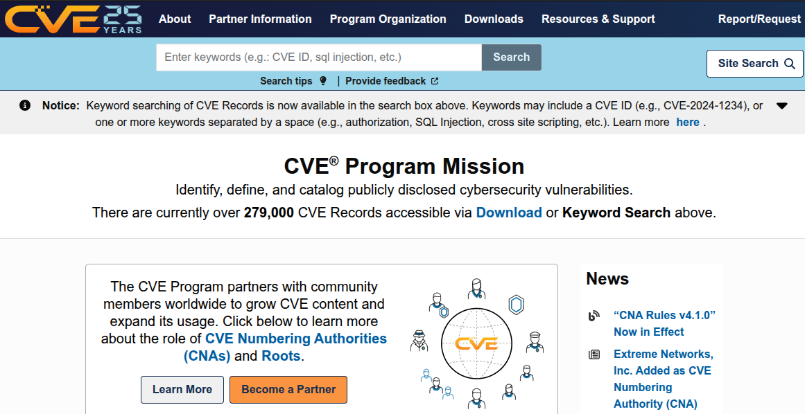</p> <br/> </div> --- ## CWE vs CVE <div class="content-center"> Two related but different concepts: <br/> <br/> <div class="fragment" data-fragment-index="0"> A single **CWE** can have many associated **CVEs**. For example, CWE-89 (SQL Injection) has thousands of associated CVE entries. <br/> </div> </div> --- ## CVE = a public, global, unique ID to identify one vulnerability <div class="content-center"> Format: `CVE-YYYY-NNNNN` - **YYYY**: year the CVE was assigned - **NNNNN**: sequential number <br/> <div class="fragment" data-fragment-index="0"> Example: **CVE-2021-26855** (ProxyLogon) - Assigned in 2021 - Describes the Microsoft Exchange Server SSRF vulnerability </div> </div> --- ## A popular example: Heartbleed <div class="content-center"> <p>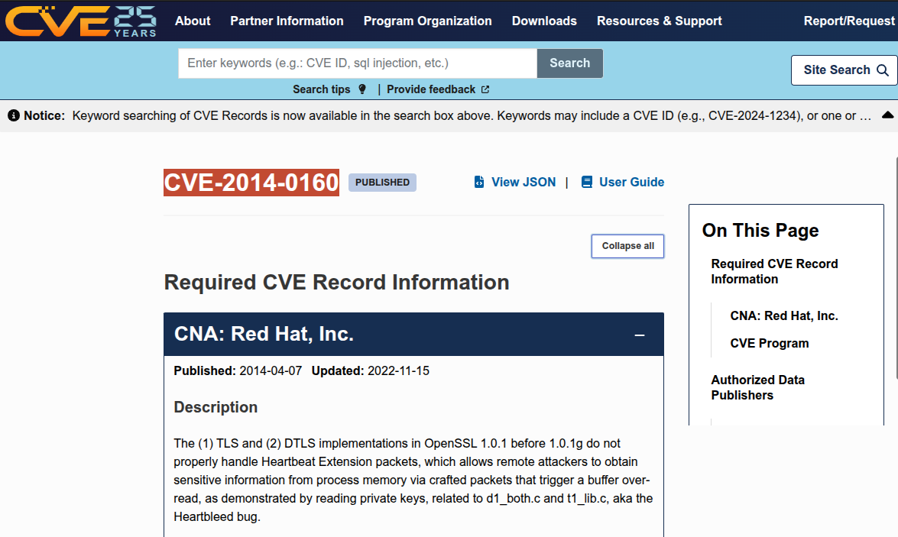</p> </div> --- ## CVE in Practice <div class="content-center"> CVE is the standard identifier used across the cybersecurity ecosystem: <br/> <br/> <div class="fragment" data-fragment-index="0"> - **National Vulnerability Database (NVD)** by NIST uses CVE IDs as primary identifiers <br/> </div> <div class="fragment" data-fragment-index="1"> - Used by **government agencies**, **OS vendors**, and **security tools** to reference specific vulnerabilities <br/> </div> <div class="fragment" data-fragment-index="2"> - Referenced in **scientific publications** (even for hardware vulnerabilities like Meltdown, Spectre) <br/> </div> <div class="fragment" data-fragment-index="3"> - **CVE Numbering Authorities (CNAs)**: organizations authorized to assign CVE IDs (e.g., MITRE, Google, Microsoft, Red Hat) </div> </div> --- ## CVE is the ID used in the National Vulnerability Database (NVD) by NIST <div class="content-center"> <p>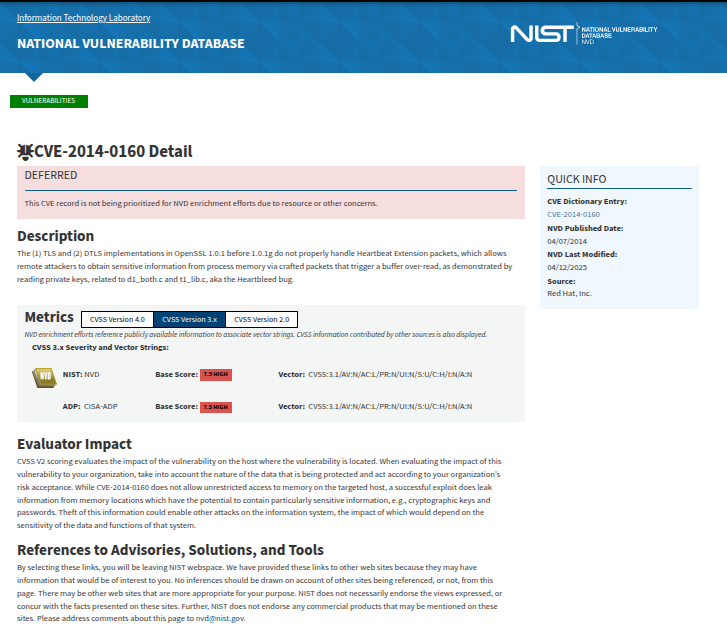</p> </div> --- ## Use of CVE ID in other entities (gov agencies, OS vendors) <div class="content-center"> <div class="columns-container columns-center"> <div class="col"> <p>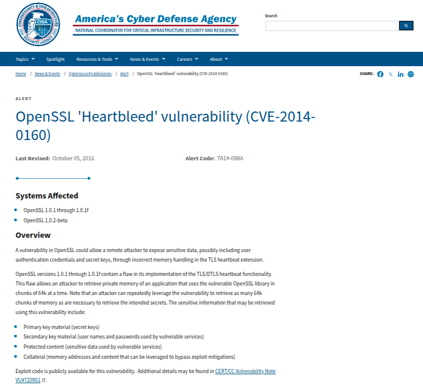</p> </div> <div class="col"> <p>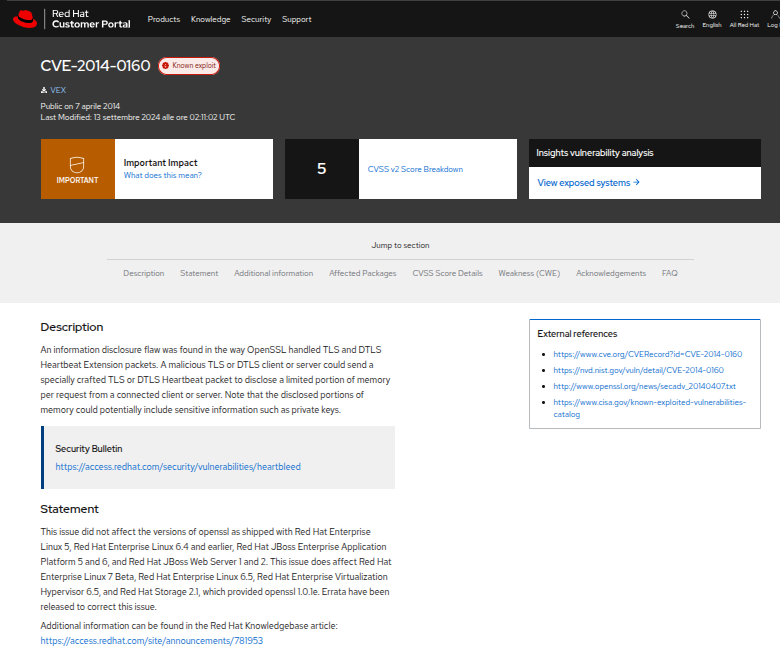</p> </div> </div> </div> --- ## Even scientific publications (and for hardware vulnerabilities) <div class="content-center"> <p>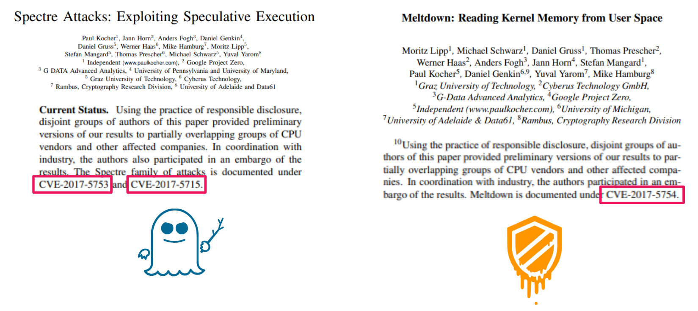</p> </div> --- <!-- .slide: data-state="break-blue hide-controls" --> # How *bad* is a vulnerability? --- ## Common Vulnerability Scoring System (CVSS) <div class="content-center"> CVSS is an open framework for communicating the severity of software vulnerabilities. It produces a **numerical score** (0.0 to 10.0) reflecting severity: | Score | Severity | |:-----:|:--------:| | 0.0 | None | | 0.1 – 3.9 | Low | | 4.0 – 6.9 | Medium | | 7.0 – 8.9 | High | | 9.0 – 10.0 | Critical | <br/> <div class="fragment" data-fragment-index="0"> Currently at version **CVSS v4.0** (released 2023 by FIRST.org) </div> </div> --- ## CVSS: Metric Groups <div class="content-center"> CVSS scores are computed from several metric groups: <br/> <div class="fragment" data-fragment-index="0"> - **Base Metrics** (intrinsic qualities of the vulnerability): - **Attack Vector**: Network, Adjacent, Local, Physical - **Attack Complexity**: Low, High - **Privileges Required**: None, Low, High - **User Interaction**: None, Required - **Impact**: Confidentiality, Integrity, Availability (each: None, Low, High) <br/> </div> <div class="fragment" data-fragment-index="1"> - **Temporal Metrics** (change over time): exploit code maturity, remediation level, report confidence <br/> </div> <div class="fragment" data-fragment-index="2"> - **Environmental Metrics** (specific to the user's environment): security requirements, modified base metrics | Aspect | CWE | CVE | |--------|-----|-----| | **What** | Type of weakness | Specific vulnerability instance | | **Scope** | Abstract / categorical | Concrete / specific | | **Example** | CWE-89: SQL Injection | CVE-2021-44228: Log4Shell | | **Analogy** | "Disease category" | "Patient diagnosis" | | **Managed by** | MITRE | MITRE + CNAs | </div> </div> --- ## CVSS: Example <div class="content-center"> **CVE-2021-44228** (Log4Shell) — a critical vulnerability in Apache Log4j: <br/> | Metric | Value | |--------|-------| | CVSS Score | **10.0 (Critical)** | | Attack Vector | Network | | Attack Complexity | Low | | Privileges Required | None | | User Interaction | None | | Confidentiality Impact | High | | Integrity Impact | High | | Availability Impact | High | <br/> <div class="fragment" data-fragment-index="0"> CVSS Vector String: `CVSS:3.1/AV:N/AC:L/PR:N/UI:N/S:C/C:H/I:H/A:H` This means: remotely exploitable, no complexity, no privileges needed, no user interaction — **maximum severity**. </div> </div> --- <!-- .slide: data-state="break-blue hide-controls" --> # One million dollar question: <br> *How to (re)find a vulnerability?* --- ## 0-day vs n-day Vulnerabilities <div class="content-center"> <div class="fragment" data-fragment-index="0"> **Zero-day vulnerability (0-day)**: a security hole in a computer system **unknown** to its developers or anyone capable of mitigating it. - No patch exists - Extremely valuable and dangerous <br/> <br/> </div> <div class="fragment" data-fragment-index="1"> **N-day vulnerability**: a vulnerability that is already **publicly known** (may or may not have a security patch available). - Most attacks in the wild are related to n-day vulnerabilities - Delays in addressing known vulnerabilities benefit both security testers and malicious actors </div> </div> --- ## How to Find a 0-day Vulnerability? <div class="content-center"> Not easy at all (when considering mature real-world software): <br/> <br/> <div class="fragment" data-fragment-index="0"> **Manual work**: - Look at or reverse the source/binary code, interact with the software, provide malicious input, etc. - Requires experience with specialized tools - Requires deep knowledge about exploitation techniques (e.g., ROP) <br/> </div> <div class="fragment" data-fragment-index="1"> **Automatic techniques**: - Advanced software security tools based on software testing/analysis: (greybox) fuzzing, symbolic execution, taint analysis, etc. - These techniques are complex, specialized, slow (weeks-to-months), and heavy (GB-to-TB of RAM) - There is not (and there will never be) a silver bullet </div> </div> --- ## How to (Re)find an n-day Vulnerability? <div class="content-center"> As soon as a CVE is published, users can start looking around for affected systems: <br/> <div class="fragment" data-fragment-index="0"> - First (and often last) step of a security **penetration tester** <br/> </div> <div class="fragment" data-fragment-index="1"> - **Attackers in the wild**: when a popular software is known to be vulnerable, attackers try to exploit it ASAP around the world <br/> <br/> </div> <div class="fragment" data-fragment-index="2"> <div class="alert alert-warning"><b>WARNING</b>: Delays in addressing known vulnerabilities benefit both security testers and malicious actors. Most attacks are related to n-day vulnerabilities.</div> </div> </div> --- <div class="content-center"> Common approach: use a **network security scanner**: 1. Detect all active machines within the network scope 2. Identify exposed services (i.e., applications listening on open ports) 3. Attempt typical application interactions, focusing on common protocols 4. Test known vulnerability exploits against the identified services </div> --- ## Examples of Network Security Scanners <div class="content-center"> Different choices with different trade-offs: <br/> - **nmap**: open source, only discovers machines/services - **Shodan/ZoomEye/Censys**: continuous Internet-connected device scanner - **OpenVAS**: open source, good starting point - **Nessus/Qualys/Rapid7/Intruder**: commercial ($$$), easy to use, up-to-date <br/> <div class="alert alert-hint"><b>NOTE</b>: in one lecture, you will see in action both <code>nmap</code> and Shodan.</div> </div> --- ## How to obtain an exploit for a CVE? <div class="content-center"> - [Hard] Build it yourself based on the CVE description - [Easy] Use a penetration tool, e.g., **Metasploit** (with a subscription, you get access to a huge repository of exploits) <br/> <br/> <div class="alert alert-error"><b>WARNING</b>: <br>Using an exploit on a machine without permission from the machine owner is <b>against the law</b>.</div> </div>